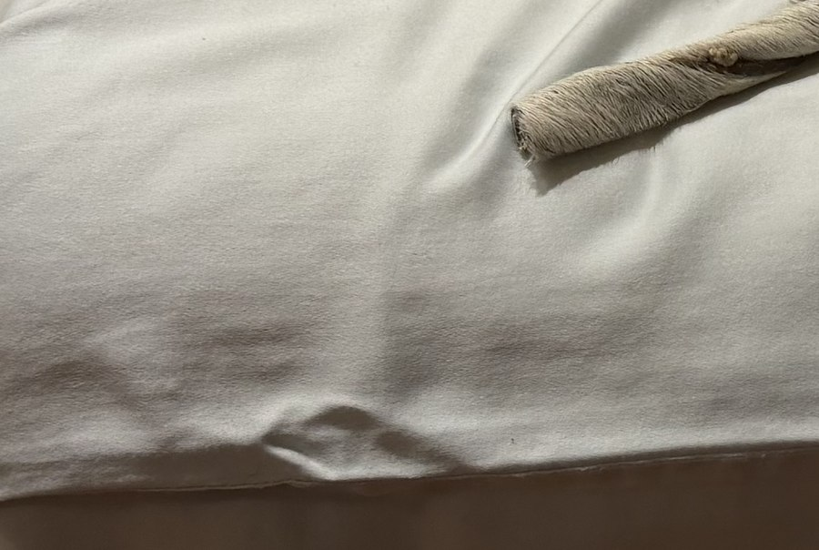
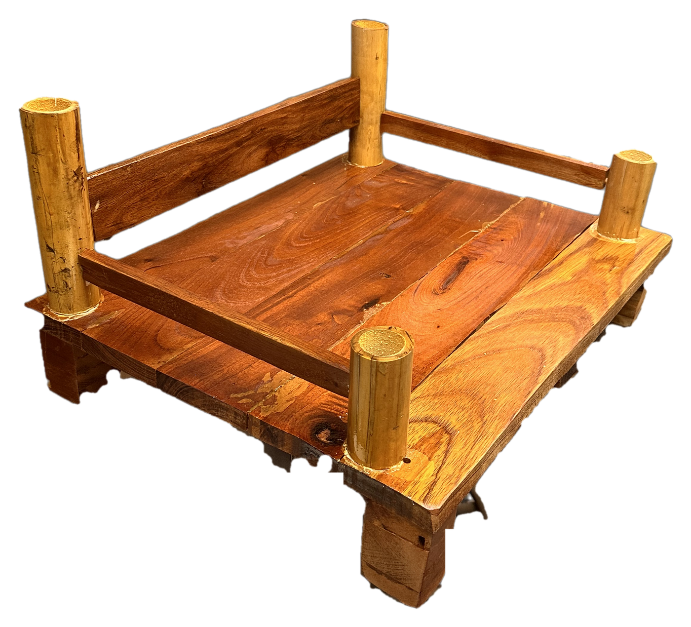

Material
A caminha estraga.
A caminha estraga.
A cadeira permanece.
 Estrutura — madeira reaproveitada
Estrutura — madeira reaproveitada
 Perna — bambu seco
Perna — bambu seco

Assento — estofado lavávelO móvel do pet também pode permanecer.

Estrutura — madeira reaproveitada
Perna — bambu seco

Assento — estofado lavávelA V1 falhou onde parecia mais bonita: nos pés. A marchetaria valorizava a madeira, mas dificultava repetição, encaixe e manutenção. A V2 troca complexidade por componente substituível.
 não fechou
não fechou
Densidade variável, baixa precisão e encaixe trabalhoso. O acabamento pedia arte; o uso pedia sistema.
Perna padronizada: sai uma, entra outra. Menos virtuosismo, mais manutenção possível — e circularidade real na peça que mais desgasta.

O tecido sai porque pet suja.
A perna troca porque é ela que bate, arranha e cansa primeiro.
Pelo, pata molhada, peso sempre no mesmo ponto.
Estrutura que existe sem depender de cola pra se manter de pé.
Perna de bambu padronizada: substituição simples, sem oficina.
Estofado que sai — higiene sem comprometer a madeira.
Madeira que se lixa e retorna, em vez de ir pro descarte.
A estrutura, o tecido e as pernas têm ciclos separados. O que desgasta primeiro precisa sair primeiro — sem levar o resto junto.